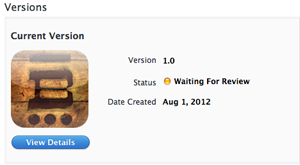
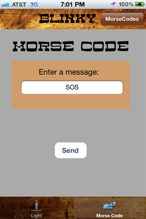
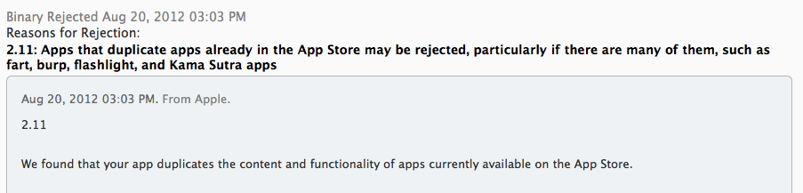

Blinky
- Date:8/1/2012
- Plateform:iOS
- Framework:UIKit
- Language:Objective-c
Blinky is a simple flashlight app. Yes, another flashlight app to add to the hundreds of other flashlight apps on the App Store. I tried to make Blinky unique by adding a feature that will covert the user's text input into Morse code through the iPhone's LED. I found out later that there are hundreds of these apps as well.
I mainly made this app since it was simple and my only experience in iOS development was a game for a class project. The game used Cocos2d, an open source framework, so I had no experience with UIKit or CocoaTouch. My main goal in developing this app was to gain experience with:
- ViewControllers
- NSUserDefaults
- Updating IBOutlets
- Connecting actions to UIButton
- NSTimer
- Populating an NSDictionary from a plist
- Keyboard inputs
- UI Customization (realizing I'm terrible at design) ---->
- App submission process
Still waiting for Blinky to be reviewed.


Update (8/20/12): Blinky was rejected. 